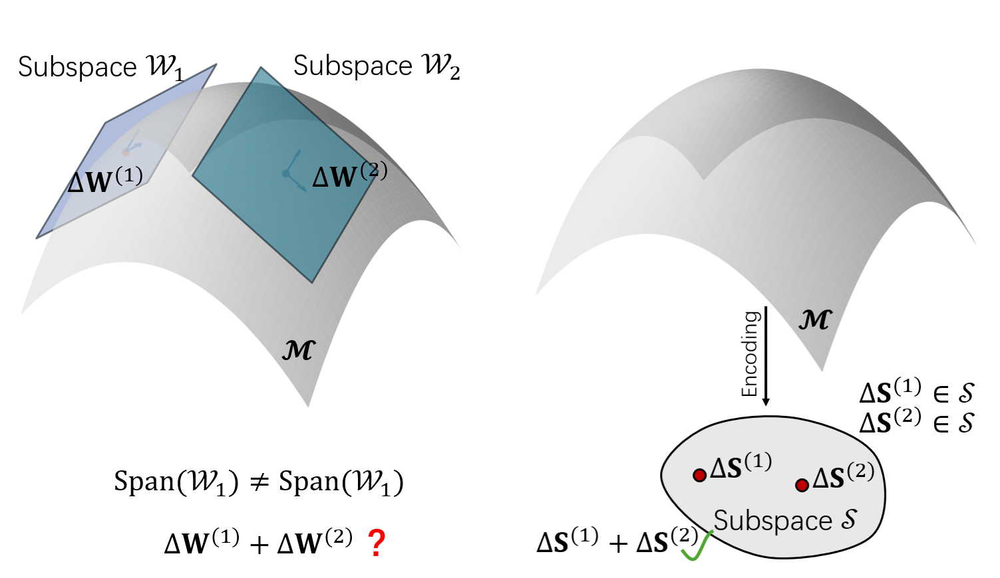
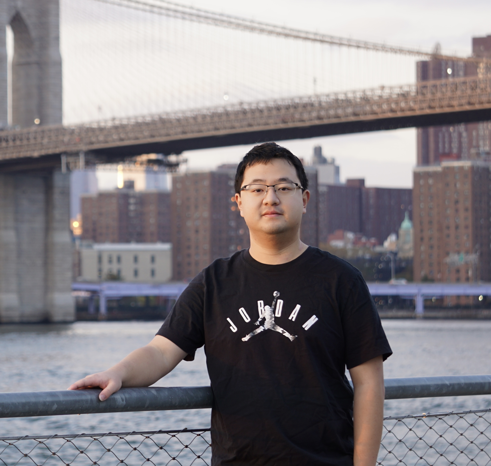
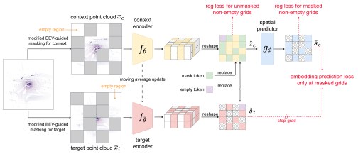
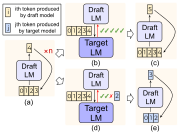

NeurIPS 2026
Approaching Effective Merging in Model Embedding Space
Wei Chen, Zhenyuan Dong, Qiang Qiu
Advances in Neural Information Processing Systems (NeurIPS 2026).
I am a second-year Ph.D. student in the Elmore Family School of Electrical and Computer Engineering at Purdue University, advised by Prof. Qiang Qiu.
Previously, I received my M.S. in Computer Engineering from New York University and my B.Eng. in Computer Science from Shanghai University.

My research interests include machine learning and computer vision, with a focus on generative models, self-supervised learning, and representation learning. In particular, I am interested in representation learning in both feature space and parameter space for generative models and world modeling, especially on post-training and test-time learning.

Wei Chen, Zhenyuan Dong, Qiang Qiu
Advances in Neural Information Processing Systems (NeurIPS 2026).

Haoran Zhu, Zhenyuan Dong, Kristi Topollai, Beiyao Sha, Anna Choromanska
Proceedings of the AAAI Conference on Artificial Intelligence (AAAI 2026).

Zhenyuan Dong, Sai Qian Zhang
IEEE/CVF Winter Conference on Applications of Computer Vision (WACV 2025).

Yunhai Hu*, Zining Liu*, Zhenyuan Dong*, Tianfan Peng*, Bradley McDanel, Sai Qian Zhang
Findings of the Conference on Empirical Methods in Natural Language Processing (EMNLP 2025 Findings).
Conference Reviewer: CVPR 2026; NeurIPS 2026; AAAI 2026, 2027.